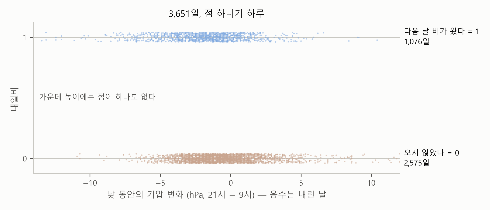
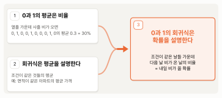
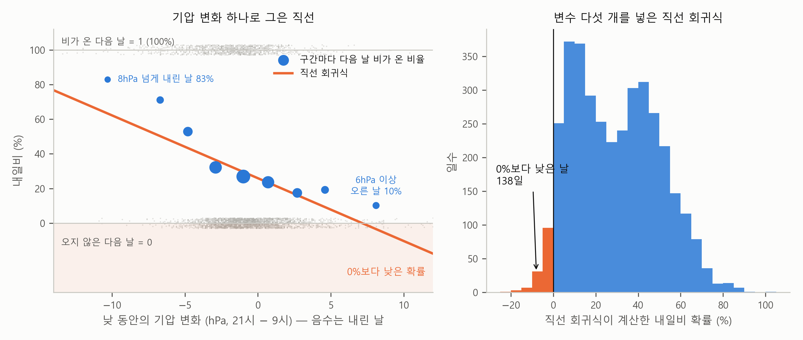

2. 0과 1을 회귀하면 — 선형확률모형#
결과가 0과 1일 때, 지금까지 써 온 직선의 회귀식을 그대로 쓰면 어떻게 될까요? 이 절의 답을 먼저 말하면 이렇습니다. 그래도 회귀식은 계산되고, 계수도 해석하기 쉽습니다. 계수가 바로 확률의 차이가 되기 때문입니다. 한 가지 문제는 이 회귀식이 3,651일 가운데 138일에 대해 내일 비가 올 확률을 0%보다 낮게 내놓는다는 것입니다. 그런데 확률이 0%보다 낮을 수는 없습니다. 이 절은 직선이 어디까지 통하고 어디서 막히는지를 봅니다.
0과 1의 평균은 비율이다#
출발점은 간단한 사실 하나입니다. 0과 1로 된 숫자들의 평균은 1의 비율과 같습니다.
열흘 가운데 사흘 비가 왔다고 해 봅시다. 표 2-1은 비가 온 날을 1, 오지 않은 날을 0으로 적은 것입니다.
표 2-1. 열흘의 비를 0과 1로 적으면
날 |
1일 |
2일 |
3일 |
4일 |
5일 |
6일 |
7일 |
8일 |
9일 |
10일 |
합 |
평균 |
|---|---|---|---|---|---|---|---|---|---|---|---|---|
비 |
X |
O |
X |
X |
O |
X |
X |
X |
O |
X |
||
숫자 |
0 |
1 |
0 |
0 |
1 |
0 |
0 |
0 |
1 |
0 |
3 |
0.3 |
표에서 보듯이 숫자 10개를 모두 더하면 3입니다. 0은 더해도 그대로이고 1만 더해지므로, 더한 값은 비가 온 일수와 같습니다. 이것을 10으로 나눈 평균 0.3은 비가 온 날의 비율 30%와 같습니다.
이번 장의 데이터에서 “내일비”의 평균은 0.295입니다. 3,651일 가운데 다음 날 비가 온 날이 29.5%라는 뜻입니다.
그림 2-1은 이 데이터를 낮 동안의 기압 변화에 따라 그린 것입니다. 점 하나가 하루입니다. 가로축은 기압 변화이고, 왼쪽으로 갈수록 기압이 많이 내린 날, 오른쪽으로 갈수록 오른 날입니다. 다음 날 비가 왔으면 위쪽 1의 높이에, 오지 않았으면 아래쪽 0의 높이에 찍혀 있습니다.

그림 2-1. 결과가 0과 1인 데이터. 점 하나가 하루이고, 다음 날 비가 온 1,076일은 위쪽 줄에, 오지 않은 2,575일은 아래쪽 줄에 있다. 점이 겹치지 않게 위아래로 조금씩 흩어 놓았다.
그림에서 보듯이 결과가 0과 1이면 점은 두 줄로만 찍힙니다. 가운데 높이에는 점이 하나도 없습니다. 지금까지 본 아파트 가격의 산점도처럼 점들이 구름 모양으로 퍼지지 않습니다. 그래도 두 줄의 점이 섞인 비율은 곳마다 다릅니다. 기압이 많이 내린 왼쪽에서는 위쪽 줄의 점이 상대적으로 많고, 기압이 오른 오른쪽에서는 위쪽 줄의 점이 드뭅니다. 가로축의 어느 자리에서 위쪽 줄의 점이 차지하는 비율, 이것이 바로 그 자리의 평균이고, 다음 날 비가 온 비율입니다.
이 사실이 중요한 까닭은 회귀식이 평균을 설명하는 도구이기 때문입니다. 단순회귀분석 장의 회귀직선은 면적이 같은 아파트들의 평균 가격을 설명했습니다. 결과가 0과 1이면 평균이 바로 비율이므로, 회귀식은 조건이 같은 날들 가운데 다음 날 비가 온 날의 비율을 설명하게 됩니다. 그리고 조건이 같은 날들의 비율이 바로 우리가 알고 싶은 확률입니다. 오늘과 날씨가 같은 날을 많이 모았을 때 다음 날 비가 온 비율, 이것을 내일 비가 올 확률로 삼는 것입니다.
그림 2-2는 이 생각을 세 단계로 정리한 것입니다.

그림 2-2. 0과 1의 회귀식은 확률을 설명한다. ①과 ②를 합치면 ③이 된다.
더미 하나의 회귀 — 두 비율의 차이#
가장 단순한 경우부터 봅시다. 설명변수로 “오늘비” 하나만 넣은 회귀식입니다. 오늘비도 0과 1로 된 더미 변수입니다. 회귀식을 계산하면 다음과 같습니다.
오늘비에 0과 1을 차례로 넣어 봅시다. 오늘 비가 오지 않은 날(오늘비 = 0)에는 계수가 붙은 항이 0이 되어 상수만 남습니다.
오늘 비가 오지 않은 날 가운데 다음 날 비가 온 날이 24.0%라는 뜻입니다. 오늘 비가 온 날(오늘비 = 1)에는 계수가 그대로 더해집니다.
44.0%입니다. 1절에서 본 두 비율(24%와 44%)이 그대로 나왔습니다. 이제 두 식을 빼면 상수 0.240이 지워지고 계수만 남습니다.
계수 0.200은 두 비율의 차이, 20.0%포인트입니다.
다중회귀분석 장에서 더미 변수의 계수를 기준 집단과의 차이로 해석했습니다. 여기서도 같습니다. 다만 이번에는 그 차이가 가격의 차이가 아니라 비율의 차이, 즉 확률의 차이입니다. 결과가 0과 1이면 회귀식의 계수를 퍼센트포인트로 바로 해석할 수 있습니다. 이것이 직선 회귀식의 큰 장점입니다.
기압 변화를 넣으면 — 직선이 0% 아래로 내려간다#
이번에는 설명변수로 기압 변화 하나만 넣어 봅시다. 기압 변화는 오늘 21시의 기압에서 9시의 기압을 뺀 값입니다. 음수이면 낮 동안 기압이 내렸고, 양수이면 올랐습니다.
계수가 음수이므로, 기압이 1hPa 오르면 다음 날 비가 올 확률이 3.6%포인트 낮고 1hPa 내리면 3.6%포인트 높다는 회귀식입니다. 기압이 그대로인 날(기압 변화 = 0)은 25.9%입니다. 여기까지는 문제가 없어 보입니다.
그림 2-3의 왼쪽 패널이 이 직선을 데이터와 함께 그린 것입니다. 회색 점은 그림 2-1의 날마다의 결과입니다(세로축은 퍼센트로 바꿔, 1을 100%로 그렸습니다). 파란 동그라미는 기압 변화를 몇 구간으로 나눠, 구간마다 다음 날 비가 온 비율을 계산한 것입니다(동그라미의 크기는 일수). 주황 선이 회귀식의 직선입니다.

그림 2-3. 왼쪽: 기압 변화 하나만 넣은 직선 회귀식(주황)과 구간마다 다음 날 비가 온 비율(파랑). 오른쪽: 변수 다섯 개를 넣은 직선 회귀식이 날마다 계산한 내일비 확률의 분포. 주황 막대가 0%보다 낮은 날이다.
그림에서 보듯이, 가운데에서는 직선이 파란 동그라미들을 잘 지나갑니다. 문제는 양 끝입니다. 맨 오른쪽 동그라미는 기압이 6hPa 이상 오른 날들이고, 실제 비율은 10%입니다. 그런데 그 동그라미 바로 아래에서 직선은 이미 0% 아래로 내려가 있습니다(약 −3%). 직선은 기압이 7hPa쯤 오른 자리에서 0%를 지나고, 더 오른쪽으로 갈수록 계속 내려갑니다. 기압이 10hPa 오른 날이라면 직선은 내일비 확률을 −10%로 계산합니다. 기압 변화 하나만 넣은 이 직선이 0%보다 낮게 계산하는 날은 40일입니다. 반대로 왼쪽 끝에서는 직선이 너무 느리게 올라갑니다. 맨 왼쪽 동그라미는 기압이 8hPa 넘게 내린 날들이고, 실제 비율은 83%인데, 직선은 그보다 한참 낮습니다. 파란 동그라미들은 오른쪽에서는 0% 근처에서 천천히 움직이다가, 왼쪽으로 갈수록 점점 가파르게 올라갑니다. 직선이 아니라 휘어 있는 것이죠.
확률에는 경계가 있습니다. 아래쪽으로는 0%보다 내려가지 못하고, 위쪽으로는 100%를 넘지 못합니다. 그런데 직선은 이 경계에서 멈추지 않습니다. 기압이 많이 오른 맑은 날에는 내일비 확률이 이미 아래쪽 경계 근처에 있습니다. 기압이 조금 더 오른다고 확률이 그만큼 더 내려갈 데가 없습니다. 하지만 직선은 기압이 오를 때마다 같은 폭으로 확률을 깎아, 결국 아래쪽 경계를 뚫고 내려갑니다.
변수 다섯 개를 넣은 직선 — 선형확률모형#
보고서와 동일한 변수 다섯 개를 모두 넣어도 회귀식은 직선입니다. 결과가 0과 1인데 지금까지처럼 직선의 회귀식으로 확률을 설명하는 것을 선형확률모형(linear probability model)이라고 부릅니다. “선형”은 직선이라는 뜻입니다. 이름은 새롭지만 계산은 다중회귀분석 장에서 한 것과 똑같습니다. 종속변수 자리에 0과 1을 넣었을 뿐입니다. 표 2-2가 그 결과입니다.
표 2-2. 선형확률모형 — 내일비를 변수 다섯 개로 설명한 직선 회귀식
계수 (%포인트) |
|
|---|---|
저녁 습도 (21시, %) |
0.18 (0.05) |
기압 변화 (21시 − 9시, hPa) |
−2.56 (0.26) |
저녁 구름양 (21시, 0 ~ 10) |
3.24 (0.20) |
오늘비 (21시까지, 예 = 1) |
7.36 (1.92) |
여름 (6 ~ 8월 = 1) |
10.28 (1.74) |
상수 |
−3.09 (2.69) |
주: 계수에 100을 곱해 퍼센트포인트로 적었다. 괄호는 표준오차. \(n\) = 3,651일, \(R^2\) = 0.20.
표에서 보듯이 계수를 해석하기가 아주 쉽습니다. 다른 조건이 같다면, 기압 변화의 계수 −2.56은 기압이 1hPa 오른 날 다음 날 비가 올 확률이 2.6%포인트 낮다는 뜻입니다. 거꾸로 말하면 낮 동안 기압이 1hPa 더 내린 날은 2.6%포인트 높습니다. 저녁 구름양이 한 칸 많으면 3.2%포인트, 오늘 비가 왔으면 7.4%포인트, 여름이면 10.3%포인트 높습니다. 저녁 습도는 1%포인트에 0.18%포인트이니, 습도가 10%포인트 높으면 1.8%포인트입니다. 기압 변화만 음수이고 나머지 넷은 양수이며, 표준오차와 비교하면 다섯 모두 0과 분명히 구별됩니다.
기압 변화의 계수는 기압 변화 하나만 넣었을 때 −3.6%포인트였는데, 다른 변수와 함께 넣으니 −2.6%포인트로 크기가 작아졌습니다. 낮 동안 기압이 내린 날은 저녁에 구름도 많은 경우가 많았기 때문입니다. 기압이 2hPa 넘게 내린 날의 저녁 구름양은 평균 5.7, 그렇지 않은 날은 3.7이었습니다. 기압 변화 하나만 넣은 회귀식에서는 구름이 많은 날의 몫까지 기압 변화의 계수에 들어가 있었고, 구름양을 함께 넣자 그 몫이 구름양의 계수로 옮겨 간 것입니다. 다중회귀분석 장에서 “다른 조건이 같다면”으로 본 일이 여기서도 일어났습니다.
참고: 결과가 0과 1이면, 예측 확률이 50%에 가까운 날일수록 결과가 크게 흩어지고 0%나 100%에 가까운 날일수록 덜 흩어집니다. 흩어진 정도가 날마다 다르므로(이분산, heteroskedasticity), 표 2-2의 표준오차는 이 차이를 반영하는(강건한, robust) 방법, 즉 이분산 강건 표준오차로 계산했습니다. 계수는 그대로이고 표준오차만 달라집니다. 이 데이터에서는 그 차이가 작습니다.
0%보다 낮은 확률을 받은 138일#
문제는 그림 2-3의 오른쪽 패널에 있습니다. 이 회귀식으로 3,651일 하루하루의 내일비 확률을 계산해 분포를 그린 것입니다. 대부분은 0%와 80% 사이에 있지만, 주황 막대로 칠한 138일은 0%보다 낮습니다.
가장 낮은 날은 2017년 2월 20일입니다. 그날은 새벽 3시 무렵에 비가 조금 와서 오늘비는 1이었지만, 21시의 하늘에는 구름이 한 점도 없었고, 습도는 39%였고, 낮 동안 기압이 12.6hPa이나 올랐습니다. 비가 오기 어려운 조건이 모두 모인 날입니다. 이 회귀식은 그날의 내일비 확률을 −20.9%로 계산합니다. 실제로 다음 날 비는 오지 않았습니다. 그러니 방향은 맞은 셈입니다. 하지만 −20.9%라는 숫자는 확률로서 뜻이 없습니다. “내일 비가 올 확률은 마이너스 21%입니다”라는 일기예보는 없으니까요.
게다가 0%보다 낮다고 한 138일 가운데 10일은 다음 날 실제로는 비가 왔습니다. 7%입니다. 0%보다 낮은 확률을 받은 날들이 비가 절대 오지 않는 날이었던 것도 아닙니다.
위쪽 경계(100%)를 넘은 날도 하루 있습니다. 2016년 4월 16일입니다. 그날은 18시부터 비가 내리기 시작했고, 21시에는 습도가 95%, 구름이 하늘을 다 덮었고, 낮 동안 기압이 19.2hPa이나 내렸습니다. 이 회귀식은 그날의 내일비 확률을 102.9%로 계산했습니다.
어디서나 같은 기울기#
직선에는 문제가 하나 더 있습니다. 직선의 기울기는 어디서나 같습니다. 표 2-2에 따르면 기압이 2hPa 더 내리면 다음 날 비가 올 확률은 5.1%포인트 높아집니다. 맑고 건조한 날이든, 흐리고 습한 날이든 똑같이 5.1%포인트입니다.
하지만 확률이 이미 아래쪽 경계 근처인 맑은 날과 확률이 중간쯤인 흐린 날에서 변화의 몫이 같을 리 없습니다. 보고서의 요약 둘째 줄이 바로 이것을 말하고 있습니다. 같은 2hPa이 맑은 날에는 3.5%포인트, 흐린 날에는 7.4%포인트를 올린다는 것이었죠. 직선의 회귀식으로는 이런 차이가 나올 수 없습니다.
그래도 직선을 쓰는 사람들#
그렇다고 선형확률모형이 쓸모없는 것은 아닙니다. 계수를 퍼센트포인트로 바로 해석할 수 있다는 장점은 큽니다. 그리고 확률이 0%나 100%에 가까운 날이 많지 않으면, 직선의 계수는 다음 절에서 배울 곡선을 써서 계산한 평균적인 확률의 차이와 비슷하게 나옵니다. 이번 장의 데이터에서도 그런지는 4절에서 확인합니다. 그래서 경제학의 실증 연구에서는 선형확률모형도 흔히 쓰입니다. 어느 쪽이 나은지는 연구자들 사이에 의견이 갈립니다.
하지만 확률 자체가 관심일 때는 이야기가 다릅니다. “오늘 같은 날이면 내일 비가 올 확률이 몇 퍼센트인가”에 답해야 하는데, 그 답이 −21%로 나올 수 있다면 곤란합니다. 그리고 같은 변화가 출발점에 따라 다르게 작용하는 모습을 보고 싶을 때도 직선으로는 안 됩니다. 이 두 문제를 함께 해결하는 것이 다음 절의 로지스틱 회귀입니다.
요약 — 이 절의 물음과 답
결과가 0과 1이면 회귀식은 무엇을 설명하나? 0과 1의 평균은 1의 비율이다. 그래서 회귀식은 조건이 같은 날들 가운데 다음 날 비가 온 날의 비율, 즉 확률을 설명한다.
직선 회귀식을 그대로 쓰면 어떤가? 이것을 선형확률모형이라고 한다. 계수가 바로 확률의 차이(%포인트)라 해석하기 쉽다. 다른 조건이 같다면 기압이 1hPa 더 내린 날은 다음 날 비가 올 확률이 2.6%포인트 높다.
무엇이 문제인가? 확률은 0%와 100% 사이에 있어야 하는데, 직선은 그 밖으로 나간다. 이 데이터에서는 138일의 내일비 확률이 0%보다 낮게 계산됐다. 또 직선의 기울기는 어디서나 같아서, 같은 변화가 출발점에 따라 다르게 작용하는 모습을 담지 못한다.